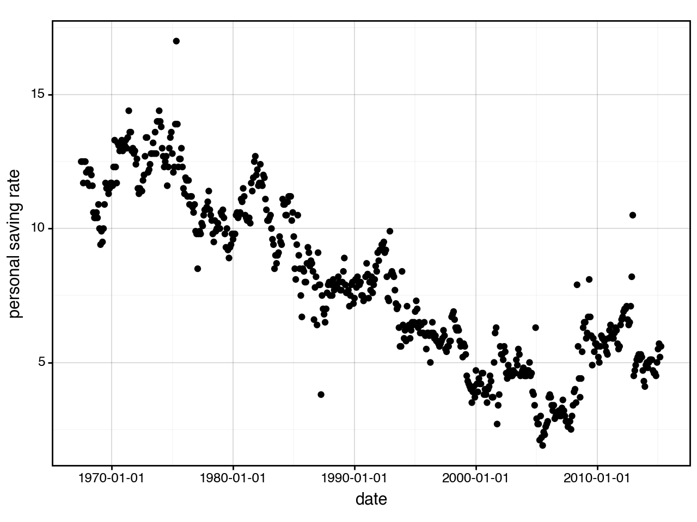
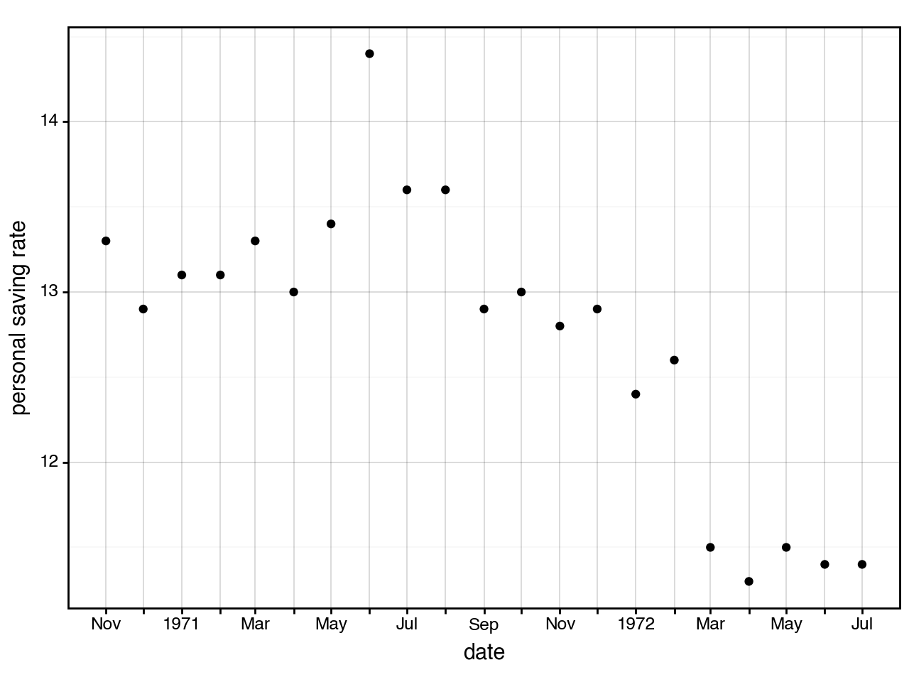

import pandas as pd
import numpy as np
from plotnine import (
ggplot,
aes,
geom_point,
scale_x_datetime,
labs,
theme_set,
theme_linedraw
)
from plotnine.data import economics
from mizani.breaks import date_breaks
from mizani.formatters import date_format
theme_set(theme_linedraw()) # default themeManipulating date breaks and date labels
Using the economics dataset
economics.head()| date | pce | pop | psavert | uempmed | unemploy | |
|---|---|---|---|---|---|---|
| 0 | 1967-07-01 | 507.4 | 198712 | 12.5 | 4.5 | 2944 |
| 1 | 1967-08-01 | 510.5 | 198911 | 12.5 | 4.7 | 2945 |
| 2 | 1967-09-01 | 516.3 | 199113 | 11.7 | 4.6 | 2958 |
| 3 | 1967-10-01 | 512.9 | 199311 | 12.5 | 4.9 | 3143 |
| 4 | 1967-11-01 | 518.1 | 199498 | 12.5 | 4.7 | 3066 |
How does the saving rate vary with time?
(ggplot(economics)
+ geom_point(aes('date', 'psavert'))
+ labs(y='personal saving rate')
)
<Figure Size: (640 x 480)>Yikes! the calculated breaks are awful, we need to intervene. We do so using the date_breaks and date_format functions from mizani.
Set breaks every 10 years
(ggplot(economics)
+ geom_point(aes('date', 'psavert'))
+ scale_x_datetime(breaks=date_breaks('10 years')) # new
+ labs(y='personal saving rate')
)
<Figure Size: (640 x 480)>That is better. Since all the breaks are at the beginning of the year, we can omit the month and day. Using date_format we override the format string. For more on the options for the format string see the strftime behavior.
(ggplot(economics)
+ geom_point(aes('date', 'psavert'))
+ scale_x_datetime(breaks=date_breaks('10 years'), labels=date_format('%Y')) # modified
+ labs(y='personal saving rate')
)
<Figure Size: (640 x 480)>We can achieve the same result with a custom formating function.
def custom_date_format1(breaks):
"""
Function to format the date
"""
return [x.year if x.month==1 and x.day==1 else "" for x in breaks]
(ggplot(economics)
+ geom_point(aes('date', 'psavert'))
+ scale_x_datetime( # modified
breaks=date_breaks('10 years'),
labels=custom_date_format1)
+ labs(y='personal saving rate')
)
<Figure Size: (640 x 480)>We can use a custom formatting function to get results that are not obtainable with the date_format function. For example if we have monthly breaks over a handful of years we can mix date formats as follows; specify beginning of the year and every other month. Such tricks can be used reduce overcrowding.
from datetime import date
def custom_date_format2(breaks):
"""
Function to format the date
"""
res = []
for x in breaks:
# First day of the year
if x.month == 1 and x.day == 1:
fmt = '%Y'
# Every other month
elif x.month % 2 != 0:
fmt = '%b'
else:
fmt = ''
res.append(date.strftime(x, fmt))
return res
(ggplot(economics.loc[40:60, :]) # modified
+ geom_point(aes('date', 'psavert'))
+ scale_x_datetime(
breaks=date_breaks('1 months'),
labels=custom_date_format2,
minor_breaks=[])
+ labs(y='personal saving rate')
)
<Figure Size: (640 x 480)>We removed the labels but not the breaks, leaving behind dangling ticks for the skipped months. We can fix that by wrapping date_breaks around a filtering function.
def custom_date_format3(breaks):
"""
Function to format the date
"""
res = []
for x in breaks:
# First day of the year
if x.month == 1:
fmt = '%Y'
else:
fmt = '%b'
res.append(date.strftime(x, fmt))
return res
def custom_date_breaks(width=None):
"""
Create a function that calculates date breaks
It delegates the work to `date_breaks`
"""
def filter_func(limits):
breaks = date_breaks(width)(limits)
# filter
return [x for x in breaks if x.month % 2]
return filter_func
(ggplot(economics.loc[40:60, :])
+ geom_point(aes('date', 'psavert'))
+ scale_x_datetime( # modified
breaks=custom_date_breaks('1 months'),
labels=custom_date_format3)
+ labs(y='personal saving rate')
)<Figure Size: (640 x 480)>The breaks and labels functions are tightly coupled to give us exactly what we want.
Credit: This example was motivated by the github user lorin (Lorin Hochstein) and his endeavor to control date breaks and date labels.